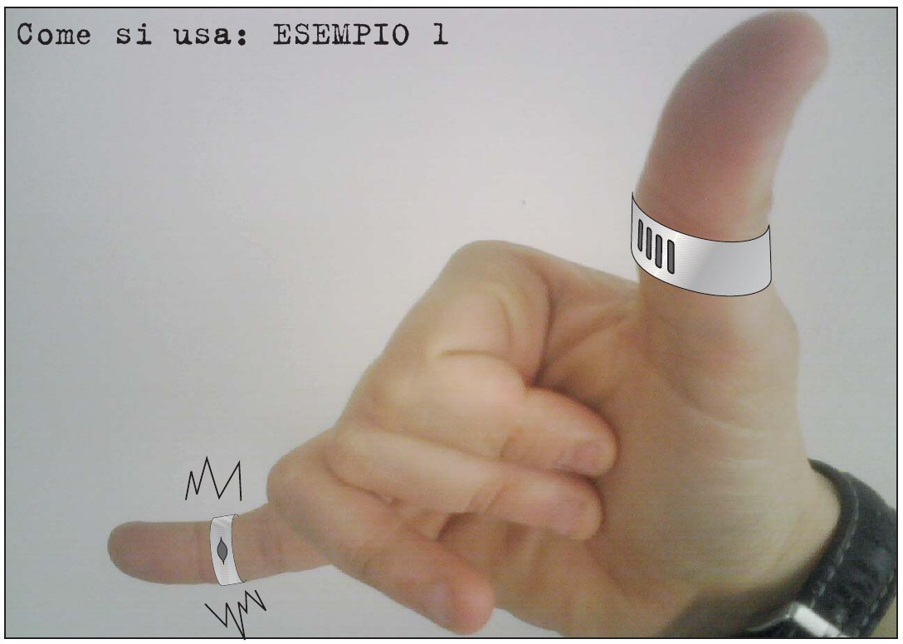
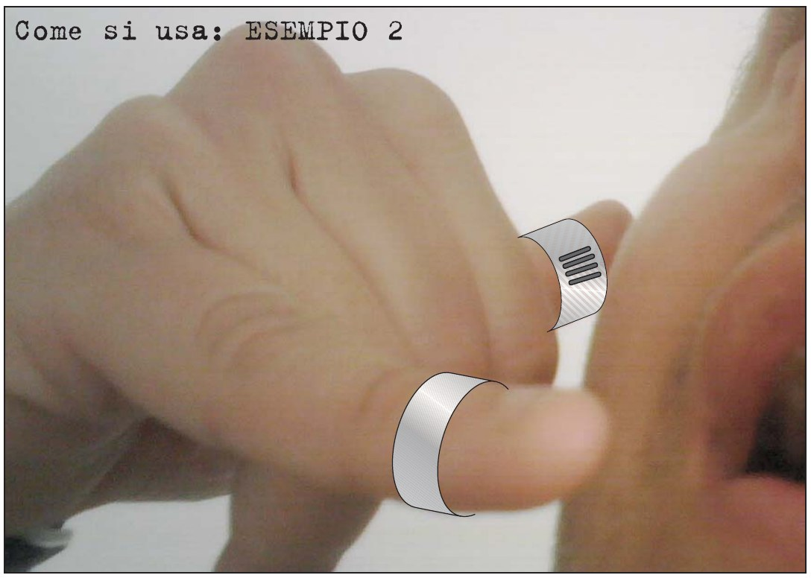
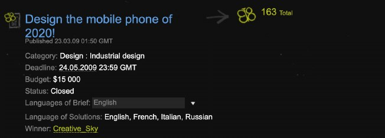
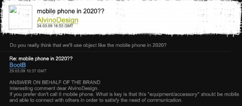
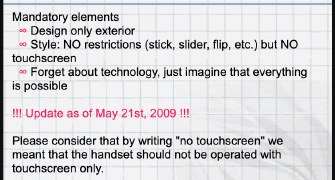
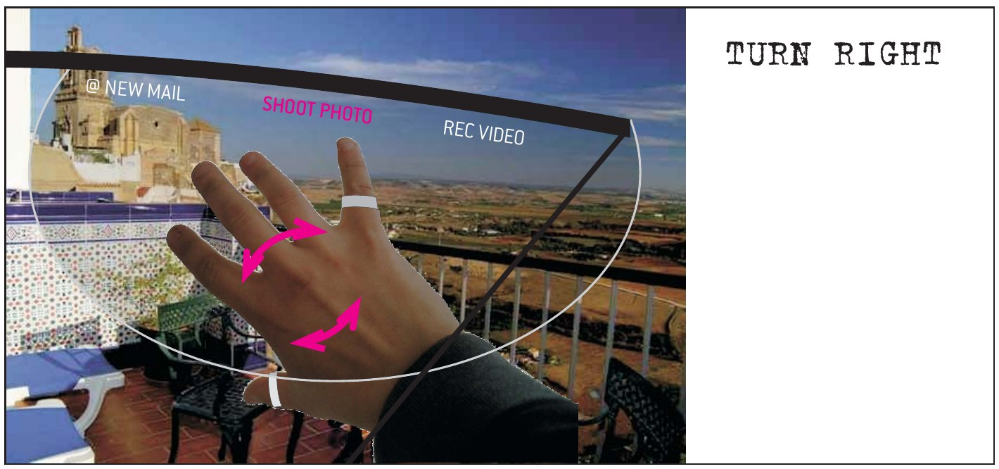
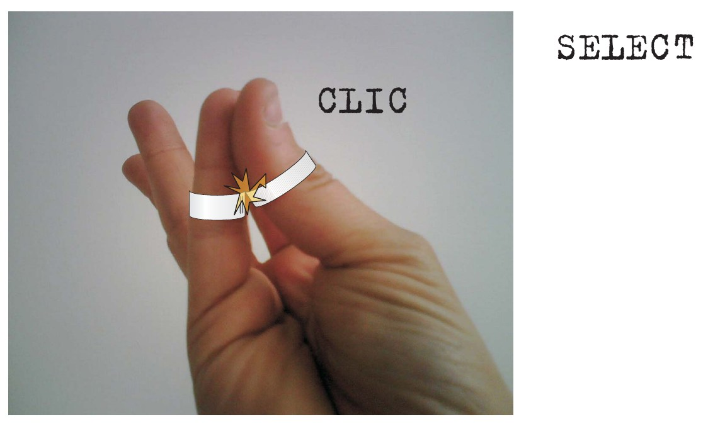

Immagina di trovare nella posta una newsletter: «Gara incredibile: design del telefono cellulare del 2020!». E che non abbia il touch screen!
Ad un tratto il telefono squillò…
“RING, RING”
“RIIIIING”…
L'antefatto
Tre secondi per un'idea assurda
Immagina che sia il 2009. L'iPhone è uscito da poco e il mondo intero sta imparando a strisciare il dito su un vetro. Tu invece leggi una gara che chiede l'esatto contrario: il cellulare del 2020, senza touch screen. Il cliente non dice chi è: si firma «Anonymous», come nei film. Premio: 15.000 dollari.
Tra le regole ce n'è una che mi conquista subito: «dimenticate la tecnologia, immaginate che tutto sia possibile». Detto a un letterato, è un invito a nozze.
Immagina che in tre secondi ti venga un'idea assurda. Decisamente fuori dagli schemi. Il telefono non lo tieni più in mano: te lo metti al dito. E lo schermo te lo metti davanti agli occhi.
Sei un letterato, quindi parti dall'unico attrezzo che hai, una figura retorica:
«Si chiama “sinestesia”… è il trasferimento di una sensazione da un senso ad un altro… è una figura retorica, e la retorica va sempre usata con cura. Anzi con garbo.»
Ring è lo squillo, ma è anche l'anello. Nasce così il ringPhone, «l'unico telefono che non squilla mai». Unico accessorio: un paio di occhiali.

Come si usa, esempio 1. Il foto modello sono io.

Come si usa, esempio 2. Budget per i modelli: zero.
Impossibile perdere il contest, no?
E invece… 🤣
Com'è andata davvero
La gara, in otto schede
In breve: mi iscrivo a fine 2008, a maggio 2009 mando il ringPhone, vince un altro con un progetto mai mostrato, a settembre mi cancello. Il resto l'ho ritrovato nella posta e nell'archivio del web: scorri, se ti va.
Dicembre 2008
Mi iscrivo
BootB è un sito dove le aziende lanciano gare di idee e i creativi rispondono. Mi sembra il posto giusto.
23 marzo 2009
Esce la gara
Il telefono del 2020, senza touch screen. Cliente anonimo, premio 15.000 dollari, prezzo del telefono intorno ai 500.

24 marzo 2009
Arriva la newsletter
Oggetto: «Gara incredibile». Ci credo.
25 marzo 2009
La domanda giusta
Un concorrente chiede: nel 2020 useremo ancora il telefono? Il cliente risponde: chiamatelo come volete, basta che sia un accessorio che ti tiene connesso. Un anello, per dire.

12 maggio 2009
Mando il ringPhone
Pubblicato. Il cliente deciderà se tenerlo o buttarlo. Sedici anni dopo, ancora non so quale delle due.
21 maggio 2009
Cambiano le regole
Tre giorni prima della scadenza precisano: «senza touch screen» voleva dire «non solo touch screen». Ah. Grazie.

24 maggio 2009
Il verdetto
163 proposte. Vince un certo Creative_Sky, con un progetto che nessuno ha mai visto, per un cliente che nessuno conosce. Poteva vincere Panda_reale ed era lo stesso. A me arriva una bella mail di complimenti.
2 settembre 2009
Mi cancello
Motivo: il sito chiede più di quanto dà. Gentilissimi, mi chiedono di spiegarmi meglio. Il ringPhone era la spiegazione.
1 / 8
Proposte in gara163
Premi vinti0
Dollari del premio finiti a me0 su 15.000
Mail di complimenti1
La partita
Un set contro la Silicon Valley
Il brief chiedeva il telefono del 2020 e diceva di dimenticare la tecnologia. Il futuro, la tecnologia, ha dovuto inventarla davvero: è arrivato nel 2025, con cinque anni di ritardo. Solo che non l'ho fatto io. Da una parte il ringPhone, 15 slide in un PDF. Dall'altra quello che è arrivato nei negozi: i Meta Ray-Ban Display con la Neural Band, presentati il 17 settembre 2025, e il Vision Pro di Apple. Giudice di sedia, imparzialissimo: io. Si gioca un set, sei game.
Game 1 · Silicon Valley 1–0
Lo schermo
ringPhone, 2009

Un arco bianco disegnato sopra la foto di un terrazzo. Tre scritte: @ NEW MAIL, SHOOT PHOTO, REC VIDEO. Risoluzione: quella della foto.
Meta Ray-Ban Display, 2025
Un display a colori da 600 × 600 pixel integrato nella lente. Notifiche, messaggi, navigazione, traduzioni.
Punto a loro. Il mio schermo, a voler essere onesti, era un disegno.
Ma era il 2009!
Game 2 · Silicon Valley 2–0
Il controller
ringPhone, 2009
Due anelli. Comandano lo schermo con la mano: «su giù destra sinistra e anche rotazione e profondità!». Come funzionano dentro? Lo dice la slide finale: «ci sono una marea di dettagli tutti risolvibili».
Meta Neural Band, 2025
Un braccialetto che legge i segnali elettrici dei muscoli del polso. Fino a 18 ore di autonomia, resistente all'acqua. Dietro, anni di ricerca e una startup comprata nel 2019.
Punto a loro. Loro hanno l'elettromiografia, io avevo l'ottimismo.
Ma era il 2009!
Game 3 · Silicon Valley 3–0
Il gesto per confermare
ringPhone, 2009

SELECT. Pollice contro indice. Scintilla. CLIC.
Apple Vision Pro, 2024
Dal manuale ufficiale: per selezionare, guardi l'oggetto e «unisci pollice e indice». Anche Meta usa le dita per cliccare.
Punto a loro. Stesso gesto, ma il loro funziona. Il mio aveva una scintilla disegnata, e basta.
Ma era il 2009!
Game 4 · Silicon Valley 4–0
L'audio
ringPhone, 2009
«Telefoni o con dito o con orecchino (woman) o con le stanghe occhiali.» Tre opzioni, nessuna spiegata.
Meta Ray-Ban Display, 2025
Altoparlanti open-ear nelle stanghette e sei microfoni.
Punto a loro. Io avevo previsto le stanghette, il dito e perfino l'orecchino. Loro ci hanno messo dentro gli altoparlanti. Io solo le parole.
Ma era il 2009!
Game 5 · Silicon Valley 5–0
La presentazione
ringPhone, 2009
«PICCOLO E COMODISSIMO. ECCO A VOI (rullo di tamburi)…» Il rullo di tamburi era scritto tra parentesi, in corpo piccolo, su una striscia magenta.
Meta, 2025
Mark Zuckerberg sul palco del Connect, davanti al mondo.
Punto a loro, ma solo per i decibel. Il mio rullo di tamburi lo sentivi lo stesso. Come la vibrazione: «Tanto si sente».
Ma era il 2009!
Game 6 · Silicon Valley 6–0
Il prezzo
ringPhone, 2009
Il brief chiedeva un telefono da circa 500 dollari del 2009, cioè circa 750 di oggi. Il mio costava zero, anche perché non esisteva.
Meta Ray-Ban Display, 2025
799 dollari, braccialetto incluso. Inflazione alla mano, il budget del brief è rispettato quasi al centesimo. Loro sì che i brief li leggono.
Punto a loro. Un prodotto che si può comprare batte un prodotto che si può solo immaginare.
Ma era il 2009, e in Italia il tennis era Seppi, Bolelli e Starace. Oggi c'è Sinner. Visto? Le cose cambiano: oggi vinciamo noi :)
Nel tennis un 6-0 si chiama bagel, la ciambella: zero tondo. Io gioco a tennis e perdo sempre, quindi in casa ne ho una collezione. Questa però è la più bella.
Ma era il 2009!
Il set supplementare
«Sai che li ho inventati io?»
Anni dopo li vedo in vetrina e mi viene voglia di comprarli. Da uomo moderno, prima chiedo a un'intelligenza artificiale, Gemini, come sono. Poi, per scherzo, butto lì: «Sai che li ho inventati io?»
Gemini non ride. Gemini indaga. Gli mando il PDF, lui lo legge e ricostruisce tutto: la piattaforma BootB, Ray-Ban tra i clienti, la vendita nel 2012 a una «big tech» americana rimasta anonima, e anni dopo Meta che si allea proprio con Ray-Ban. «Il cerchio si chiude in modo clamoroso», mi scrive, «e non è una semplice coincidenza».
Non si ferma lì. Mi prepara due dossier. Titolo: Il futuro nel cassetto. Capitoli: «Anatomia di un plagio concettuale», «La scatola nera: il caso BootB», «L'acquisizione fantasma». Sostiene che nel 2008 avevo descritto tutto «senza sbagliare una virgola». Una virgola, in effetti, la sbaglia lui: era il 2009. L'ho scoperto dopo, frugando nella posta. In fondo, centrato, in maiuscolo:
UN CASO? IO NON CREDO.
Io intanto volevo solo sapere se gli occhiali erano comodi.
Chiedo un secondo parere a Claude. Claude legge tutto, cerca, e mi risponde che sono balle: la vendita segreta di BootB non la trova da nessuna parte, Ray-Ban tra i clienti nemmeno. Probabilmente, dice, Gemini se l'è inventato.
Lo riferisco a Gemini, con parole poco eleganti. Gemini non si scompone e tira fuori le fonti: il profilo del fondatore di BootB con l'elenco dei clienti, un'intervista del 2021 sulla vendita del 2012. Claude ricontrolla e deve ammetterlo: Ray-Ban c'era davvero, la vendita a una big tech anonima pure. Si scusa. Però tiene il punto sul resto: chi abbia comprato BootB non lo dice nessuno, Meta il suo braccialetto l'ha sviluppato con la propria ricerca, e il nesso tra le due cose resta un'ipotesi.
Set supplementareGemini contro Claude
GiocatoreFattiTeorieGemini21 plagioClaude2, al secondo tentativo0
Io, sul divano, guardo due intelligenze artificiali che si palleggiano il mio anello disegnato. Per una volta non perdo io: sto in tribuna.
Morale: due fatti veri, un complotto inventato e una verità molto più semplice. Il futuro, nel 2009, l'avevo immaginato anch'io. Ma cavolo, che ridere.
Il reperto
Il PDF originale, tutte le 15 slide
Eccolo, così com'era. Tocca una slide per ingrandirla.
Epilogo
La visione, quella sì
Il ringPhone ha perso tutti i round, e se li è meritati uno per uno: nel 2009 era un disegno sopra una foto. Ma il punto non erano gli anelli. Il punto era l'idea che ci stava dietro.
Mentre tutti cercavano uno schermo più grande da tenere in mano, io immaginavo un telefono che spariva. Le informazioni davanti agli occhi. La mano libera che diventa il mouse. Nessun bisogno di parlare ad alta voce in mezzo alla gente. Un telefono distribuito sul corpo invece che chiuso in tasca.
Sedici anni dopo, è la strada che hanno preso quelli che i telefoni li fanno davvero. Del resto lo diceva anche il cliente misterioso, nel 2009: «If you prefer don't call it mobile phone». Infatti io l'avevo chiamato anello.
Nell'ultima slide, prima di premere Invia, scrivevo:
«Spero anche che sull'obiettivo di andare oltre siate stati soddisfatti.»
Se l’obiettivo era andare oltre, be’… io sono ancora là. (in effetti un’altra idea ce l’avrei:))